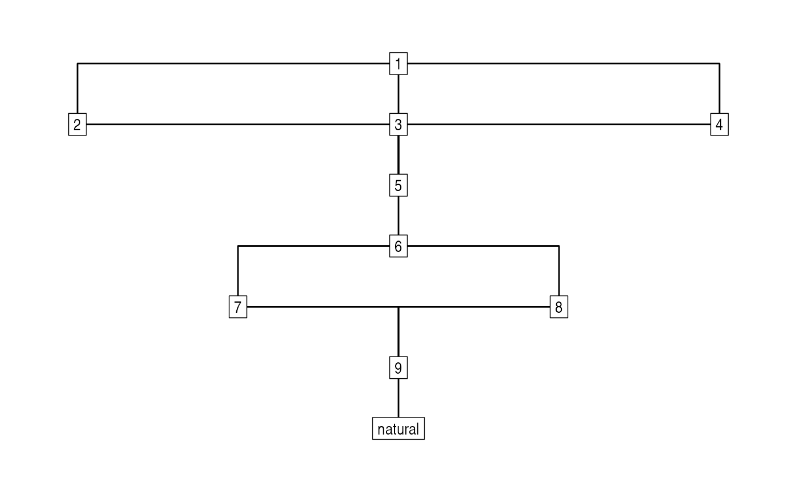
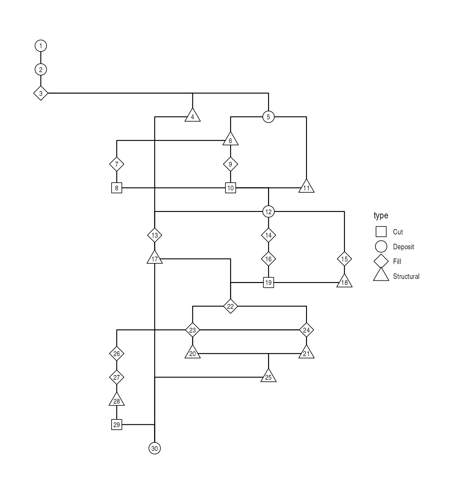

stratigraphr provides a tidy framework for working with
archaeological stratigraphy as a graph data structure in R. This
vignette introduces the core functions for constructing, validating, and
visualising stratigraphic graphs (a ‘Harris matrix’), and demonstrates
how they integrate with the broader tidygraph ecosystem.
Terminology
Archaeological stratigraphy records the depositional history of a site as a set of units1 and their relative temporal ordering as determining by the law of superposition (Harris 1979). A stratigraphic graph is the formal representation of this information: a directed acyclic graph where nodes represent units and directed edges represent stratigraphic relations (Dye and Buck 2015).
The Harris matrix is the conventional visual representation of a stratigraphic graph, where units are arranged in boxes and lines indicate direct stratigraphic relations (Harris 1979). While the terms are sometimes used interchangeably in archaeological literature, it is useful to distinguish the abstract data structure (the stratigraphic graph) from its visual representation (the Harris matrix).
Other information commonly featured on Harris matrices – such as unit equivalencies, the distinction between deposits and interfaces, unit types, or phase assignments – are not part of the pure stratigraphic graph. They are associated information that can be used for display, analysis, or modelling, but the graph structure itself is determined solely by the above/below relations between units.
stratigraph objects
The stratigraph object is the package’s central data
structure. It is a specialised subclass of
tidygraph::tbl_graph, representing a stratigraphic graph as
tidy data with nodes (units) and edges (relations).
The package includes the dataset harris12, a classic
stratigraphic sequence from Harris (1979, fig.
12):
library("stratigraphr")
data("harris12")
harris12
#> context above below equal
#> 1 1 NA 2, 3, 4 <NA>
#> 2 2 1 5 <NA>
#> 3 3 1 5 <NA>
#> 4 4 1 5 <NA>
#> 5 5 2, 3, 4 6 <NA>
#> 6 6 5 7, 8 <NA>
#> 7 7 6 9 8
#> 8 8 6 9 7
#> 9 9 7, 8 natural <NA>
#> 10 natural 9 NA <NA>The data frame contains a context column with unit
labels and list-columns (above, below,
equal) describing the stratigraphic relations between
units. To construct the graph, we specify which column contains the unit
labels and which column describes the relations:
h12_graph <- stratigraph(harris12, "context", "above")
h12_graph
#> # A stratigraph: 10 units and 12 relations
#> # ✔ Valid stratigraphic graph
#> 1
#> ┌───────────────┼───────────────┐
#> 2 3 4
#> └───────────────┼───────────────┘
#> 5
#> │
#> 6
#> ┌───────┴───────┐
#> 7 8
#> └───────┬───────┘
#> 9
#> │
#> naturalThe direction argument (default "above")
indicates whether the relation column lists units above or
below each unit. Because stratigraph inherits from
tbl_graph, it can be manipulated using the full suite of
tidygraph and igraph functions:
library("tidygraph")
# Inspect the nodes (units)
h12_graph |>
activate("nodes") |>
as_tibble()
#> # A tibble: 10 × 4
#> context above below equal
#> <chr> <chr> <list> <chr>
#> 1 1 NA <chr [3]> NA
#> 2 2 1 <chr [1]> NA
#> 3 3 1 <chr [1]> NA
#> 4 4 1 <chr [1]> NA
#> 5 5 2 <chr [1]> NA
#> 6 6 5 <chr [2]> NA
#> 7 7 6 <chr [1]> 8
#> 8 8 6 <chr [1]> 7
#> 9 9 7 <chr [1]> NA
#> 10 natural 9 <chr [1]> NA
# Inspect the edges (relations)
h12_graph |>
activate("edges") |>
as_tibble()
#> # A tibble: 12 × 2
#> from to
#> <int> <int>
#> 1 1 2
#> 2 1 3
#> 3 1 4
#> 4 2 5
#> 5 3 5
#> 6 4 5
#> 7 5 6
#> 8 6 7
#> 9 6 8
#> 10 7 9
#> 11 8 9
#> 12 9 10See the tidygraph documentation for more details on tidy graph manipulation and analysis.
Importing stratigraphic data
Stratigraphic data is fundamentally simple: a data frame of units and
relations. The stratigraph() function expects:
- A label column with unique identifiers for each unit
- A relation column describing stratigraphic relations between units
The relation column can be either a list-column (where each element is a vector of related units) or a regular column in long format (where each row represents a single relation).
Constructing from scratch
You can construct a stratigraphic data frame directly in R:
strat_data <- data.frame(
unit = c("A", "B", "C"),
below = c("B", "C", NA)
)
stratigraph(strat_data, "unit", "below", direction = "below")
#> # A stratigraph: 3 units and 2 relations
#> # ✔ Valid stratigraphic graph
#> A
#> │
#> B
#> │
#> CReading from CSV
More commonly, stratigraphic data is stored in a CSV file. With
long-format input, you can read the CSV and pass it directly to
stratigraph():
library("readr")
csv_text <- "context,above
A,
B,A
C,A"
strat_data <- read_csv(csv_text, show_col_types = FALSE)
stratigraph(strat_data, "context", "above")
#> # A stratigraph: 3 units and 2 relations
#> # ✔ Valid stratigraphic graph
#> A
#> ┌─┴─┐
#> B CStratigraphic data often includes both ‘above’ and ‘below’ columns.
These should describe the same graph from opposite perspectives. Use
strat_is_mirror() to verify they are consistent:
strat_is_mirror(harris12$context, harris12$above, harris12$below)
#> [1] TRUEReading LST files
The read_lst() function reads stratigraphic data from
LST format files, used by BASP Harris, Stratify, and ArchEd:
lst_file <- system.file("extdata", "bonn.lst", package = "stratigraphr")
lst_data <- read_lst(lst_file)
stratigraph(lst_data, "name", "above")
#> # A stratigraph: 19 units and 26 relations
#> # ✔ Valid stratigraphic graph
#> +
#> ┌──────────────┬─────┴──┬────────┐
#> 1 27 53 │
#> │ ┌────────┤ │ │
#> 2 28 29 52 │
#> ├──┐ └──┬──┬──┴──┬─────┼─────┬──┴──┐
#> 3 │ │ 42 30 44 54 │
#> │ ├─────┘ └──┬──┘ └──┬──┘ │
#> 4 41 70 35 43
#> └──┴───────────┼───────────┴────────┘
#> -It supports both the original BASP format and the extended format
used by Stratify and ArchEd – see ?read_lst for
details.
Validating stratigraphic graphs
Following Dye and Buck (2015), a valid stratigraphic graph2 must satisfy two properties:
- It is acyclic – it contains no cycles, i.e. no circular chains of relations. A cycle would mean unit A is above unit B, B is above C, and C is above A, violating the law of stratigraphic superposition.
- It contains no redundant relations – a relation is redundant if it is already implied by other relations through transitivity. Transitivity means that if A is above B and B is above C, then A is necessarily above C; the direct relation between A and C adds no new information. Per Harris’ ‘Law of Stratigraphical Succession’, only the uppermost and undermost relations are significant when placing a unit in a stratigraphic sequence.
The stratigraph() function warns on construction if the
graph is invalid, but allows you to create and inspect invalid graphs.
Use strg_is_valid() for explicit checking:
strg_is_valid(h12_graph)
#> [1] TRUECycles
A cycle occurs when the stratigraphic relations are contradictory. This violates the law of superposition and indicates an error in the data:
cycle_data <- data.frame(
unit = c("A", "B", "C"),
below = c("B", "C", "A")
)
cycle_graph <- stratigraph(cycle_data, "unit", "below", direction = "below")Redundant relations
A redundant relation is one that is already implied by transitivity. For example, if A is above B and B is above C, then A’s position above C is already established through the chain A–B–C. An explicit relation between A and C is redundant and should be removed to produce a valid stratigraphic graph.
redundant_data <- data.frame(
unit = c("A", "B", "B", "C"),
above = c("B", "C", "C", NA)
)
redundant_graph <- stratigraph(redundant_data, "unit", "above")
strg_is_valid(redundant_graph)
#> [1] FALSEThe strg_prune() function computes the transitive
reduction, removing redundant edges:
pruned_graph <- strg_prune(redundant_graph)
pruned_graph
#> # A stratigraph: 3 units and 2 relations
#> # ✔ Valid stratigraphic graph
#> C
#> │
#> B
#> │
#> A
strg_is_valid(pruned_graph)
#> [1] TRUEPlotting with ggraph
ggraph extends the
grammar of graphics to network visualisation, providing a
ggplot2-compatible interface for plotting graph data. Because
stratigraph objects inherit from tbl_graph,
they work seamlessly with ggraph: you can map aesthetics, add layers,
and use geoms just as you would with any other tidy data.
The Harris matrix is the conventional visual representation of a stratigraphic graph. We can reproduce it using ggraph with a Sugiyama (layered) layout:
library("ggraph")
ggraph(h12_graph, layout = "sugiyama") +
geom_edge_elbow() +
geom_node_label(aes(label = context), label.r = unit(0, "mm")) +
theme_graph()
The Sugiyama layout arranges units in horizontal layers according to
their stratigraphic position, with the earliest (lowest) units at the
bottom. The geom_edge_elbow() geom produces the
right-angled edges characteristic of Harris matrices.
Incorporating associated information
While the stratigraphic graph itself contains only units and
relations, we can use associated information to enhance the
visualisation. The shub1 dataset (Richter et al. 2017) includes columns for
context type, phase, and
structure, which can be mapped to visual aesthetics:
shub1_graph <- stratigraph(shub1, "context", "above")
ggraph(shub1_graph, layout = "sugiyama") +
geom_edge_elbow() +
geom_node_point(aes(shape = type), fill = "white", size = 6) +
geom_node_text(aes(label = context), vjust = 0.5, size = 3) +
scale_shape_manual(values = c(22, 21, 23, 24)) +
theme_graph()
Further reading
-
Chronological Query Language (CQL): The
vignette("cql")vignette describes how to convert stratigraphic graphs into OxCal chronological models for Bayesian radiocarbon calibration. - Tidy radiocarbon analysis: Radiocarbon analysis functions have moved to the c14 package. See its introductory vignette for details.
- Graph manipulation: The tidygraph documentation provides comprehensive coverage of graph manipulation in R.